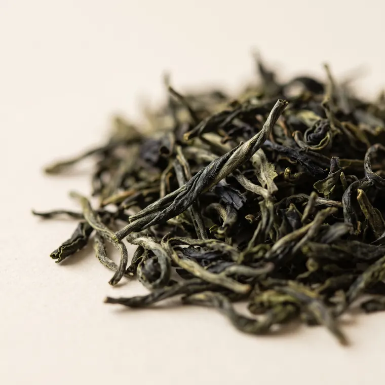

Một
Hái
Sáu giờ sáng, sương còn đọng trên lá. Người hái chỉ ngắt một tôm hai lá, phần non nhất của búp chè, và để lại phần còn lại cho mùa sau.
Trà Việt · hái lúc sương chưa tan
Trà của sương sớm
Ở những đồi chè cao hơn nghìn mét, sương nằm trên lá đến gần trưa. SƯƠNG hái chè lúc ấy, sao trên lửa củi, gói bằng giấy dó, rồi gửi tới bạn: bốn vị trà, mỗi vị một vùng núi.
Sáu giờ sáng, sương còn đọng trên lá. Người hái chỉ ngắt một tôm hai lá, phần non nhất của búp chè, và để lại phần còn lại cho mùa sau.
Lá tươi được rải mỏng trên nong tre cho gió đồi làm héo dần trong vài giờ. Lá mềm đi, và hương bắt đầu thức dậy.
Chảo gang trên bếp củi, đôi tay đảo liên hồi. Lửa giữ lại màu xanh, cánh chè xoăn lại và thơm mùi cốm.
Tới lượt bạn. Nước sôi để nguội một chút, rót chậm, rồi chờ. Một ấm trà ngon không vội được.
Bấm vào tên trà để rót.

Đồi chè Thái Nguyên
Hương cốm non, chát dịu đầu lưỡi rồi ngọt dần nơi cổ họng.
180.000đ / 50 g
Bốn bước cho Lục trà Thái Nguyên.
Rót nước sôi lên ấm và chén cho nóng đều, rồi đổ đi.
5 g trà cho một ấm 150 ml. Lắc nhẹ ấm để hương trà dậy.
Nước 80°C, rót cao tay cho lá trà xoay trong ấm. Hãm 1 phút.
Rót đều ra từng chén, không để sót giọt nào trong ấm. Lá này pha được 4 nước.
Ấm đất nung mộc, ba chén sứ trắng mỏng, khay gỗ và muỗng tre. Vừa đủ cho một buổi sáng ba người.
690.000đ
Trà hái đầu mùa, sao xong là gói, gửi đi trong tuần.